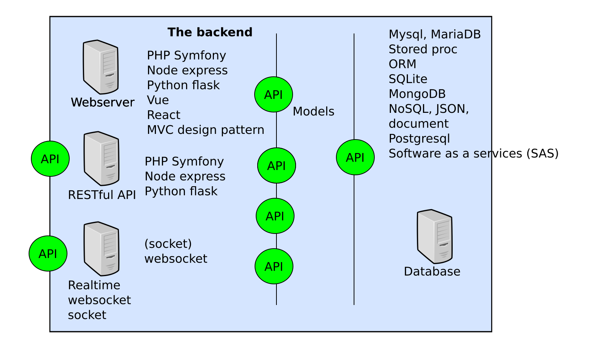

<!doctype html>
<html class="theme-5">
<meta charset="utf-8" />
<link href="../html-slideshow.bundle.min.css" rel="stylesheet" />
<link href="../style.css" rel="stylesheet" />
<!-- <script src="https://dbwebb.se/cdn/js/html-slideshow_v1.1.0.bundle.min.js"></script> -->
<script src="../html-slideshow.bundle.min.js"></script>

<title>Seminar vteam w3</title>

<script data-role="slide" type="text/html" data-markdown class="titlepage center">
# Seminar vteam 
## Focus client architecture
### Mikael Roos
</script>


<script data-role="slide" type="text/html" data-markdown>
# Agenda

* Architecture overview
* Client side
    * Applications
    * Architecture
    * Techniques
* Docker
* What programming languages to learn
* Softer issues on team work

</script>


<script data-role="slide" type="text/html" data-markdown class="titlepage center">
# Architecture
</script>


<script data-role="slide" type="text/html" data-markdown class="center full">
<figure>

</figure>
</script>


<script data-role="slide" type="text/html" data-markdown class="center full">
<figure>

</figure>
</script>


<script data-role="slide" type="text/html" data-markdown class="center full">
<figure>

</figure>
</script>


<script data-role="slide" type="text/html" data-markdown class="center full">
<!-- Redraw this as a microservice architecture instead, with or without events -->
<figure>

</figure>
</script>


<script data-role="slide" type="text/html" data-markdown class="titlepage center">
# Client side applications
</script>


<script data-role="slide" type="text/html" data-markdown>
# Clients

* Company admin web site
* End-customer web site
* App to rent a bike
* Bicycle brain
* Simulation

</script>


<script data-role="slide" type="text/html" data-markdown>
# Company admin web site

* Manage end-customers
* Manage cycles
* Manage citys
* Manage map zones
* Runtime view of system
* View log of travels
* Manage bills

</script>


<script data-role="slide" type="text/html" data-markdown>
# End-customer web site

* Manage personal details
* View log of travels
* Manage bills

</script>


<script data-role="slide" type="text/html" data-markdown>
# App to rent a bike

* Rent a bike
* Ride it
* Leave back the bike
* View rides

</script>


<script data-role="slide" type="text/html" data-markdown>
# Bicycle brain

* Manages the individual cycle
* Sends events on its status

</script>


<script data-role="slide" type="text/html" data-markdown>
# Simulation

* The system should contain x000 cycles and some cities
* Simulate that end-customers rents bikes and performe rides
* View real-time events on the map and system logs
* How much traffic can the system cope with?

</script>


<script data-role="slide" type="text/html" data-markdown class="titlepage center">
# Client architecture
</script>


<script data-role="slide" type="text/html" data-markdown>
# Client architecture 

Sketch an architecture for each client subsystem

* Make text and drawings to understand the subsystem

</script>


<script data-role="slide" type="text/html" data-markdown>
# Write text 

* Summarize the purpose of the client
* Pinpoint the features it has

</script>


<script data-role="slide" type="text/html" data-markdown>
# Use case scenario 

* Visualize the text
* Draw a usecase scenario how the user interacts with the client,
    * and/or how the client interacts with the system
* Flowcharts perhaps, or not?
* Are there any important APIs?
* To what other subsystems does the client connect?

</script>


<script data-role="slide" type="text/html" data-markdown>
# Sketch user interface 

* Show each "page" and what the user can do on it
* How are the pages connected?
* Create a prototype

</script>

<!-- Fixa bilder -->

<script data-role="slide" type="text/html" data-markdown class="titlepage center">
# Client technologies
</script>


<script data-role="slide" type="text/html" data-markdown>
# Web site

* Web classic (server rendered pages)
    * MVC - PHP plain/SSG/Symfony, Node express, Python Flask
* Single page application/SPA (load it all on the browser)
    * JS/Fetch, React, Vue, Mithril

</script>


<script data-role="slide" type="text/html" data-markdown>
# Desktop application

* Electron HTML/CSS/JS framework (desktop)

</script>


<script data-role="slide" type="text/html" data-markdown>
# Mobile app

* Web responsive
* Single page application/SPA
* Progressive web app/PWA
* Hybrid web apps
    * Ionic/Cordova (compile down to native, cross platform)
    * React native
* Native apps
    * Java/JavaFX, Objective-C/Swift, C#/.NET

</script>


<script data-role="slide" type="text/html" data-markdown>
# Simulation

* Python
* Node
* Bash
* PHP
* Program running in terminal or as a service/server?

</script>


<script data-role="slide" type="text/html" data-markdown class="titlepage center">
# Docker
</script>


<script data-role="slide" type="text/html" data-markdown>
# Docker

* A repo with example
    * https://gitlab.com/mikael-roos/docker

</script>


<script data-role="slide" type="text/html" data-markdown class="titlepage center">
# Popular techniques
## What does the industry wants?
</script>


<script data-role="slide" type="text/html" data-markdown>
# To choose technology

* What programming language should we learn?

> "Learn about programming languages, use some and practice how to learn a new language."

</script>


<script data-role="slide" type="text/html" data-markdown>
# Platsbanken

* [PHP](https://arbetsformedlingen.se/platsbanken/annonser?q=PHP)
* [JavaScript](https://arbetsformedlingen.se/platsbanken/annonser?q=JavaScript)
* [Node](https://arbetsformedlingen.se/platsbanken/annonser?q=Node)
* [C#](https://arbetsformedlingen.se/platsbanken/annonser?q=C%23)
* [.NET](https://arbetsformedlingen.se/platsbanken/annonser?q=.NET)
* [Python](https://arbetsformedlingen.se/platsbanken/annonser?q=python)
* [Java](https://arbetsformedlingen.se/platsbanken/annonser?q=java)
* [C++](https://arbetsformedlingen.se/platsbanken/annonser?q=C%2B%2B)
* [Bash](https://arbetsformedlingen.se/platsbanken/annonser?q=bash)

</script>


<script data-role="slide" type="text/html" data-markdown class="titlepage center">
# Softer issues
## Team work
</script>


<script data-role="slide" type="text/html" data-markdown>
# What skills are needed?

* What is lacking on the newly examined programmers? 

[The view from a team leader with staff responsibility on a larger software product/service company](https://gist.github.com/mosbth/76a4d7a503e45692d28c4c0dcd029703)

* How does the industry want to organise in teams? 

[Martin Mazur - Dagens Industri IT & Strategy](https://www.linkedin.com/feed/update/urn:li:activity:6861311477781970944/). The companies wants effective teams and workers who has their own opinion.

</script>


<script data-role="slide" type="text/html" data-markdown>
# Lästips The Deadline

* The Deadline: A Novel About Project Management
* [Läs om boken](https://wiki.c2.com/?TheDeadline).

</script>


<script data-role="slide" type="text/html" data-markdown class="titlepage center">
# The end
</script>


<script data-role="slide" type="text/html" data-markdown>
</script>


<!--
<script data-role="slide" type="text/html" data-markdown>
# Skillnad 10x på programmerare?

> "[A good programmer can be as 10X times more productive than a mediocre one](https://softwareengineering.stackexchange.com/questions/179616/a-good-programmer-can-be-as-10x-times-more-productive-than-a-mediocre-one)"

* Stämmer det?
* Hur hanterar man det?

* [Individual Productivity Variation in Software Development](https://www.construx.com/blog/productivity-variations-among-software-developers-and-teams-the-origin-of-10x/)
* [Origins of 10X - How Valid is the Underlying Research?](https://www.construx.com/blog/the-origins-of-10x-how-valid-is-the-underlying-research/)

</script>


<script data-role="slide" type="text/html" data-markdown>
# Hjältar - behövs de?

* Vad är en hjälte i ett programmeringsprojekt?

> "Det här håller inte, vi tar och skriver om kärnan över helgen."

</script>


<script data-role="slide" type="text/html" data-markdown>
# Tips

* Lär känna ditt team
* Håll ihop teamet
* Försök skapa effektiva team
* Det finns 10x och 1x - hantera det
* Hjältar behövs ibland, men försök undvika att använda det kortet, risk att teamet tar skada, hjältarna bränns upp, individualisterna flyttar på sig

</script>


<script data-role="slide" type="text/html" data-markdown>
# Råd

* x10 - håll ihop ditt team och dra nytta av dem, undvik att bli hjälten som bränns ut
* x1 - lär dig ett fåtal tekniker väldigt bra, bidra till teamet på olika sätt
* Teamleader - Håll ihop teamet i vått och torrt, ge utrymme och bygg för ansvarstagande och kundfokus
* Chef - Se till att dina teamleader har utrymme att lyckas och misslyckas
* Produktledare - försök knyta ihop kundens önskemål med teamets kunnande
* Ta fight på rätt plats på rätt sätt, integritet

</script>

-->

</html>
